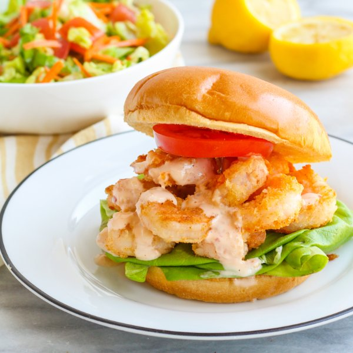

Shrimp Po'Boy with Spicy Mayo & Lemon-Dijon Garden Salad

Prep Time
30 min
Nutrition (per serving)
652.8 kcalCalories
32.2 gProtein
36.8 gCarbs
42.7 gFat
Full nutrition table
| Calories | 652.8 kcal |
| Total fat | 42.7 g |
| Saturated fat | 6.5 g |
| Trans fat | 0.5 g |
| Cholesterol | 223.5 mg |
| Sodium | 1255.4 mg |
| Carbohydrates | 36.8 g |
| Fiber | 6.2 g |
| Sugars | 10.3 g |
| Protein | 32.2 g |
| Potassium | 799.4 mg |
| Calcium | 200.7 mg |
| Iron | 3.6 mg |
| Vitamin A | 864.2 IU |
| Vitamin C | 24 mg |
| Vitamin D | 5.2 IU |
Cookware
Ingredients
- 2 headsbutter (Boston) lettuce
- 2 mediumcarrots
- 2 clovesgarlic
- 2lemons
- 1 ½ lbraw peeled shrimp, fresh or frozen
- 2tomatoes
- 4whole grain buns or rolls
- all-purpose flour
- black pepper
- chili-garlic sauce
- Dijon mustard
- extra virgin olive oil
- garlic powder
- honey
- mayonnaise
- onion powder
- panko bread crumbs
- paprika
- salt
- thyme, dried
- white wine vinegar
Steps
- If using frozen shrimp, place them in a colander and run under cold water to thaw them slightly and remove any ice crystals. (If using fresh shrimp, skip this step.) Place the shrimp on a clean towel or paper towels and pat dry.1 ½ lb raw peeled shrimp, fresh or frozen
- Wash and dry the fresh produce.2 lemons
2 heads butter (Boston) lettuce
2 medium carrots
2 tomatoes - Peel and mince garlic. Transfer to a small bowl.2 cloves garlic
- Juice one lemon into the bowl with the garlic. Add mayonnaise, chili-garlic sauce, and salt; whisk to combine and set the spicy mayo aside.¼ cup mayonnaise
2 tsp chili-garlic sauce
½ tsp salt - In a medium bowl, combine bread crumbs, flour, and spices. Add shrimp and toss to combine.¼ cup panko bread crumbs
2 tbsp all-purpose flour
½ tsp paprika
½ tsp garlic powder
½ tsp onion powder
½ tsp salt - Preheat a large skillet over medium-high heat. Once the skillet is hot, add oil and swirl to coat the bottom.¼ cup extra virgin olive oil
- Working in batches if necessary, add shrimp to the skillet; cook until opaque, 1-2 minutes per side. Once done, transfer to a paper-towel lined plate.
- Meanwhile, juice the remaining lemon into a large bowl. Add oil, vinegar, Dijon, honey, and spices; whisk to combine the dressing.¼ cup extra virgin olive oil
2 tbsp white wine vinegar
½ tsp Dijon mustard
½ tsp honey
½ tsp thyme
½ tsp salt
¼ tsp black pepper - Separate the lettuce leaves. Set aside 2 large leaves per sandwich; chop or tear remaining leaves into bite-sized pieces and add to the bowl with the dressing.
- Trim carrots and peel into thin noodle-like sticks using a julienne (or regular) peeler. Add to the salad bowl.
- Slice one tomato and set aside for the sandwiches. Small dice the remaining tomato and add to the salad bowl. Toss to combine the salad.
- Toast buns if desired.4 whole grain buns or rolls
- Place the bottom half of a bun on each plate. Layer with lettuce, shrimp, tomato, and spicy mayo; close with top half of the bun. Serve salad on the side and enjoy!